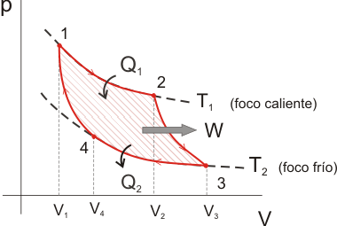
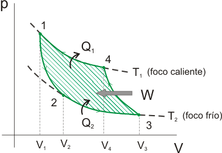
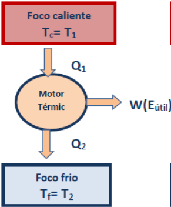
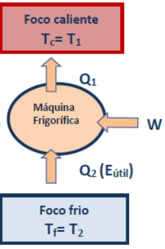
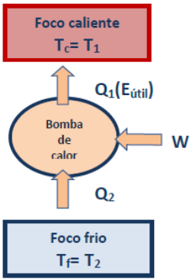
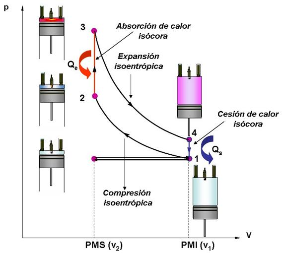
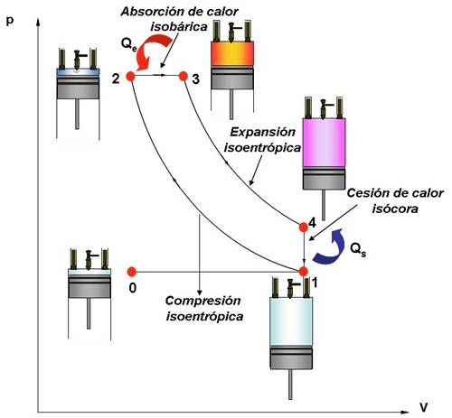
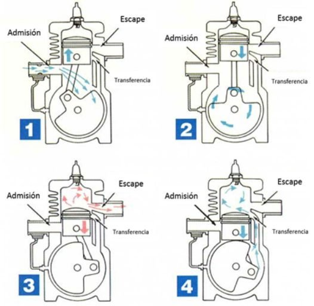
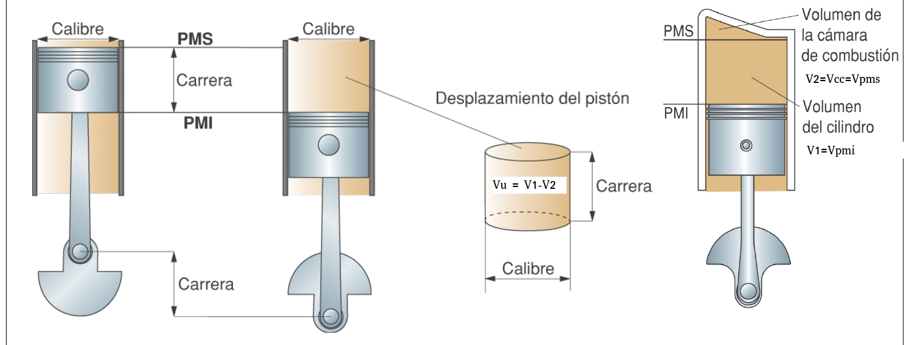
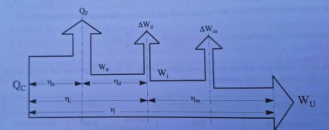

Toda máquina térmica opera entre dos focos térmicos: un foco caliente a temperatura Tc y un foco frío a temperatura Tf, con Tc > Tf siempre.
Carnot (1824) estableció el ciclo termodinámico ideal: dos transformaciones isotérmicas y dos adiabáticas reversibles. Es teórico y reversible: ninguna máquina real puede igualarlo.
El ciclo puede recorrerse en dos sentidos: en sentido horario → motor térmico (produce trabajo); en sentido antihorario → frigorífica o bomba de calor (consume trabajo).


| Máquina | Flujo de energía | Energía útil | Ejemplo |
|---|---|---|---|
| Motor térmico (MTD) | Recibe Qc del foco caliente, produce W, cede Qf al foco frío | W | Motor de gasolina |
| Máquina frigorífica (MTI) | Consume W para extraer Qf del foco frío y cederlo al caliente Qc | Qf | Frigorífico, aire acondicionado |
| Bomba de calor (MTI) | Mismo ciclo que la frigorífica pero el objetivo es calentar el foco caliente | Qc | Climatización en modo calefacción |



Rendimiento de una máquina térmica: es la relación entre el trabajo útil obtenido y el calor absorbido del foco caliente.
La energía útil es el trabajo W producido. La energía que se paga es el calor Qc. Por el Segundo Principio siempre hay pérdidas: η < 1 siempre.
η: rendimiento (adimensional, 0 < η < 1)
Tc, Tf en Kelvin. Ningún motor real puede superar este valor.
Rendimiento de una máquina frigorífica: es la relación entre el calor extraído del foco frío y el trabajo suministrado.
La energía útil es Qf (calor extraído). La energía consumida es W. Como Qf puede ser mayor que W, la eficiencia puede superar 1 — por eso se llama eficiencia, no rendimiento.
ε puede ser > 1
Rendimiento de una bomba de calor: es la relación entre el calor cedido al foco caliente y el trabajo suministrado.
La energía útil es Qc (calor entregado al foco caliente). Como Qc = W + Qf, la bomba siempre entrega más energía de la que consume: ε′ > 1 siempre.
Rendimiento de Carnot: es el rendimiento máximo teórico que puede alcanzar una máquina térmica que trabaja entre dos focos térmicos.
Rendimiento real: es el rendimiento de una máquina real, menor que el ideal de Carnot debido a pérdidas mecánicas, térmicas y por rozamiento.
Es habitual que el enunciado indique que la máquina funciona con un rendimiento relativo al ideal de Carnot. Se calcula primero el valor ideal y luego se multiplica por el factor relativo.
ηrel: factor relativo dado en el enunciado (ej. 0,75 → funciona al 75 % del máximo teórico)
Cuando el enunciado trabaja con potencias en lugar de energías, las fórmulas de η, ε y ε′ se mantienen idénticas: los tiempos se cancelan en el cociente.
| Símbolo | Nombre | Fórmula | Unidades |
|---|---|---|---|
| P | Potencia del motor (MTD) | \(\dfrac{W}{t}\) | W o kW |
| Pc | Potencia calorífica (MTI) | \(\dfrac{Q_c}{t}\) | W o kW |
| Pf | Potencia frigorífica (MTI) | \(\dfrac{Q_f}{t}\) | W o kW |
| Motor térmico (MTD) | Máquina frigorífica | Bomba de calor | |
|---|---|---|---|
| Tipo de ciclo | Directo (horario) | Inverso (antihorario) | Inverso (antihorario) |
| Trabajo W | Producido | Consumido | Consumido |
| Energía útil | W | Qf | Qc |
| Magnitud | η < 1 | ε (puede ser > 1 o < 1) | ε′ > 1 (siempre) |
| Fórmula real | \(\dfrac{W}{Q_c}\) | \(\dfrac{Q_f}{W}\) | \(\dfrac{Q_c}{W}\) |
| Fórmula Carnot | \(\dfrac{T_c - T_f}{T_c}\) | \(\dfrac{T_f}{T_c - T_f}\) | \(\dfrac{T_c}{T_c - T_f}\) |
| Ejemplo real | Motor gasolina, turbina vapor | Frigorífico, aire acondicionado | Climatización en modo calefacción |
Un motor de combustión interna alternativo convierte la energía química del combustible en trabajo mecánico mediante la expansión de gases en el interior de un cilindro. El pistón se mueve entre el Punto Muerto Superior (PMS) (volumen mínimo) y el Punto Muerto Inferior (PMI) (volumen máximo). Cada desplazamiento se llama carrera.



| Característica | Motor Otto (gasolina) | Motor Diesel (gasóleo) |
|---|---|---|
| Formación mezcla | Mezcla aire-gasolina antes del cilindro | Solo aire; combustible inyectado al final de compresión |
| Ignición | Bujía eléctrica (chispa exterior) | Autoignición por alta temperatura (>700 °C) |
| Tipo combustión | Rápida, aprox. isócora (vol. constante) | Progresiva, aprox. isobara (presión constante) |
| Rc | ≈ 8–12 | ≈ 14–22 |
| γ | 1,4 | 1,33 |
| Rendimiento real | ~30–35 % (Rc menor) | ~35–45 % (Rc mayor compensa γ menor) |
| Presión máx. | ~40–60 bar | ~60–80 bar |
| Emisiones | Mayor CO y HC | Mayor NOx y partículas |

D: calibre o diámetro del pistón [mm o cm]
El volumen unitario es el volumen desplazado por el pistón durante una carrera, es decir, el volumen comprendido entre el punto muerto superior y el punto muerto inferior de un cilindro.
C: carrera (PMI → PMS) · V₁ = VPMI · V₂ = VPMS = Vcc
La relación de compresión es el cociente entre el volumen máximo del cilindro y el volumen mínimo cuando el pistón está en el punto muerto superior.
Otto: Rc ≈ 8–12 · Diesel: Rc ≈ 14–22
La cilindrada es el volumen total desplazado por todos los cilindros del motor en una carrera completa.
Z: número de cilindros
C en mm · n en rpm
La energía Qc del combustible se pierde en tres etapas sucesivas antes de convertirse en trabajo útil Wu:
| Magnitud | Descripción | Pérdida que genera |
|---|---|---|
| Qc | Energía del combustible (Qc = ṁc · Pc · t) | Pérdidas al foco frío Qf |
| Wtt | Trabajo teórico termodinámico (ciclo ideal) | Pérdidas de diagrama ΔWd |
| Wi | Trabajo indicado (ciclo real medido) | Pérdidas mecánicas ΔWm |
| Wu | Trabajo útil (efectivo) en el eje | — |

ηtt — rendimiento termodinámico: rendimiento máximo teórico del ciclo ideal. ηd — rendimiento del diagrama: tiene en cuenta que el ciclo real no coincide exactamente con el ideal. ηi — rendimiento indicado: relación entre el trabajo indicado real y el trabajo teórico del ciclo. ηm — rendimiento mecánico: relación entre la potencia útil obtenida en el eje y la potencia indicada. η — rendimiento total: relación entre la potencia útil efectiva y la potencia aportada por el combustible.
| Rendimiento | Fórmula | Cuándo |
|---|---|---|
| \(\eta_{tt}\) — Termodinámico | \(\eta_{tt} = 1 - \dfrac{1}{R_c^{\,\gamma-1}}\) γ=1,4 Otto · γ=1,33 Diesel | Siempre — techo teórico |
| \(\eta_d\) — Del diagrama | \(\eta_d = \dfrac{W_i}{W_{tt}}\) | Solo si el enunciado lo da |
| \(\eta_i\) — Indicado | \(\eta_i = \eta_{tt} \cdot \eta_d\) | Sin \(\eta_d\) → \(\eta_i = \eta_{tt}\) |
| \(\eta_m\) — Mecánico | \(\eta_m = \dfrac{W_u}{W_i} = \dfrac{P_e}{P_i}\) | Solo si el enunciado lo da |
| \(\eta\) — Total | \(\eta = \eta_{tt} \cdot \eta_d \cdot \eta_m = \dfrac{P_e}{P_{ap}}\) | El más utilizado en la práctica |
Es la potencia térmica suministrada al motor por el combustible.
ṁc: consumo másico [kg/s] · Pc: poder calorífico [kJ/kg] · gasolina ≈ 44 000 kJ/kg · gasóleo ≈ 42 000 kJ/kg
Cada potencia sucesiva aplica el rendimiento correspondiente: Ptt = Pap · ηtt ; Pi = Ptt · ηd ; Pe = Pi · ηm
Es la potencia mecánica que el motor entrega en el eje. También se llama potencia al freno porque históricamente se medía mediante un freno dinamométrico aplicado al eje del motor.
n: régimen de giro en rpm
Es la cantidad de combustible que consume el motor para producir una unidad de potencia útil.
La primera se usa cuando el enunciado da el consumo másico ṁc y la potencia efectiva Pe. La segunda cuando da el rendimiento total η y el poder calorífico Pc. Menor Ce → motor más eficiente.
| Magnitud | Símbolo | Fórmula | Unidades |
|---|---|---|---|
| Superficie pistón | S | S = (π/4)·D² | mm² o cm² |
| Volumen unitario | Vu | Vu = S·C | cm³ |
| Relación de compresión | Rc | Rc = V₁/V₂ = (Vu+Vcc)/Vcc | adimensional |
| Cámara de compresión | Vcc | Vcc = Vu/(Rc−1) | cm³ |
| Cilindrada total | Vt | Vt = Vu·Z | cm³ |
| Velocidad media pistón | Vm | Vm = 2·C·n / 60 000 | m/s |
| Rend. termodinámico | ηtt | ηtt = 1 − 1/Rc(γ−1) | adimensional |
| Rend. del diagrama | ηd | ηd = Wi/Wtt | adimensional |
| Rend. indicado | ηi | ηi = ηtt·ηd | adimensional |
| Rend. mecánico | ηm | ηm = Wu/Wi | adimensional |
| Rend. total | η | η = ηtt·ηd·ηm | adimensional |
| Potencia aportada | Pap | Pap = ṁc·Pc | W o kW |
| Potencia efectiva | Pe | Pe = η·Pap = M·ω | W o kW |
| Par motor | M | M = Pe/ω | N·m |
| Velocidad angular | ω | ω = 2π·n/60 | rad/s |
| Consumo específico | Ce | Ce = ṁc/Pe ó Ce = 1/(η·Pc) | g/kW·h |
Un motor real presenta pérdidas en cada etapa de conversión de energía. Se definen cinco rendimientos encadenados:
| Rendimiento | Definición | Fórmula |
|---|---|---|
| Teórico (Carnot) | Máximo teórico entre dos focos T_c y T_f | \( \eta_{Carnot} = 1 - \dfrac{T_f}{T_c} \) |
| De diagrama | Cociente entre área del ciclo real y área del ciclo ideal | \( \eta_d = \dfrac{\text{Área ciclo real}}{\text{Área ciclo ideal}} \) |
| Indicado | Relación entre el trabajo indicado (por el gas sobre el pistón) y el teórico | \( \eta_i = \dfrac{W_{indicado}}{W_{teórico}} \) |
| Mecánico | Relación entre el trabajo útil (en el cigüeñal) y el indicado; tiene en cuenta rozamientos | \( \eta_{m} = \dfrac{W_{útil}}{W_{indicado}} \) |
| Efectivo (global) | Producto de todos los anteriores; rendimiento real del motor | \( \eta_{e} = \eta_{Carnot} \cdot \eta_d \cdot \eta_i \cdot \eta_{m} \) |
El rendimiento efectivo de un motor Otto real está en torno al 25-35%; el de un Diésel, al 35-45%; un ciclo combinado de central térmica supera el 60%.
| Datos del enunciado | Modelo que se activa | Magnitud clave |
|---|---|---|
| Calor absorbido y trabajo producido | Motor térmico | Rendimiento |
| Calor extraído del foco frío | Máquina frigorífica | COP frigorífico |
| Calor entregado al foco caliente | Bomba de calor | COP calorífico |
| Temperaturas de focos | Máquina ideal de Carnot | Límite teórico |
| Par, rpm, cilindrada o consumo | Motor alternativo | Potencia, rendimiento y consumo específico |
| Tipo de problema | Datos que suelen aparecer | Magnitud final | Control de coherencia |
|---|---|---|---|
| Motor térmico | Calor absorbido, calor cedido o trabajo útil | Rendimiento | η siempre menor que 1 |
| Máquina frigorífica | Calor extraído del foco frío y trabajo | COP frigorífico | Puede ser mayor que 1 |
| Bomba de calor | Calor cedido al foco caliente y trabajo | COP calefacción | Mayor que COP frigorífico equivalente |
| Motor alternativo | Cilindrada, régimen, par, consumo | Potencia, rendimiento o consumo específico | Convertir rpm a rad/s si se usa P = Mω |
5 preguntas tipo PAU. Pulsa la opción que consideres correcta y se mostrará la respuesta.
1. El rendimiento de Carnot exige las temperaturas en:
2. La eficiencia de una máquina frigorífica:
3. En un motor 4T, el cigüeñal gira en cada ciclo completo:
4. La cilindrada de un motor de 4 cilindros con D=80 mm y L=90 mm es:
5. El par motor M y la potencia efectiva Pe se relacionan por:
La mejora final añade una prueba de coherencia para evitar confundir rendimiento, COP, potencia útil y flujos de calor.
| Magnitud | Relación segura | Comprobación rápida |
|---|---|---|
| Rendimiento | \(\eta=W/Q_c\) | Debe ser menor que 1. |
| Frigorífica | \(COP=Q_f/W\) | El efecto útil es extraer calor del foco frío. |
| Bomba de calor | \(COP=Q_c/W\) | El efecto útil es calentar el foco caliente. |
| Potencia de giro | \(P=M\omega\) | \(\omega=2\pi n/60\) si n está en rpm. |